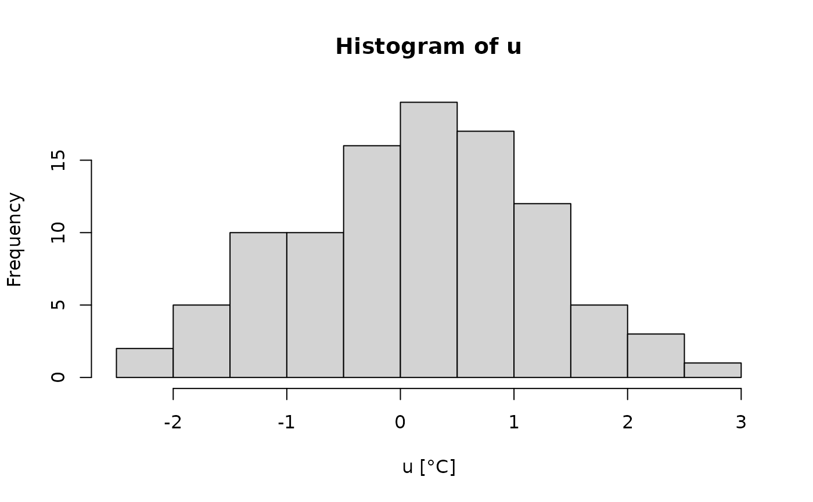

histogram for unit objects
Arguments
- x
object of class units, for which we want to plot the histogram
- xlab
character; x axis label
- main
character; title of histogram
- ...
parameters passed on to hist.default
Examples
units_options(parse = FALSE) # otherwise we break on the funny symbol!
u = set_units(rnorm(100), degree_C)
hist(u)
